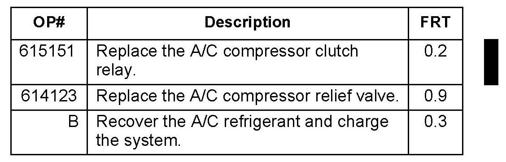

Electrical, A/C - Battery Dead/A/C Cools Poorly
11-031March 2, 2012
Applies To:
2007-11 MDX - ALL
Battery Is Dead, or A/C Cools Poorly
(Supersedes 11-031, dated October 15, 2011, to revise the information marked by the black bars)
*REVISION SUMMARY
Under WARRANTY CLAIM INFORMATION, the operation number for A/C compressor clutch relay replacement was changed.*
SYMPTOM
The battery dies after the vehicle is parked for a short time or overnight, or the A/C system blows warm air, or both. Also, the A/C compressor may be noisy and may emitting refrigerant vapor from the relief valve.
NOTE:
If the only symptom is a dead battery, it may occur intermittently.
PROBABLE CAUSE
The A/C compressor clutch relay may be stuck closed. If the relay sticks when the ignition switch is turned to LOCK (0), and the compressor was running, it creates enough parasitic draw to discharge the battery. If the relay sticks while the engine and A/C are running at a lower vehicle speed, the A/C pressure may spike, causing the compressor's relief valve to open and lose refrigerant.
CORRECTIVE ACTION
Replace the A/C compressor clutch relay. If needed, charge the battery, replace the compressor relief valve, and evacuate and recharge the A/C system.
PARTS INFORMATION
A/C Compressor Clutch Relay:
P/N 39794-SDA-A05
A/C Compressor Relief Valve:
P/N 38801-P9K-E01
PAG Oil (Denso ND-Oil 8):
P/N 38897-PR7-A01AH
TOOL INFORMATION
AC/DC Clamp Meter:
P/N LH41A
Relay Puller:
P/N O7AAC-OOOA2A1 or P/N 07AAC-000A2A0

WARRANTY CLAIM INFORMATION
The New Vehicle warranty applies.
NOTE:
See Warranty Information Bulletin 01-W02 for refrigerant and refrigerant oil claim information.
Failed Part: P/N 39794-SDA-A03
Defect Code: 03217
Symptom Code: 03214
Skill Level: Repair Technician
DIAGNOSIS
Dead Battery
1. If the battery is dead, test it and charge it with the GR8 battery diagnostic station.
NOTE:
If the battery is weak, the vehicle may be misdiagnosed due to low battery voltage, causing a low amount of current draw.
^ If the result is GOOD BATTERY, go to step 2.
^ If the result is REPLACE BATTERY or BAD CELL REPLACE, replace the battery, then go to step 2.
2. Connect the AC/DC clamp meter over the battery negative cable, and select DC.
3. With the ignition switch in LOCK (0), check for parasitic draw.
^ If there is a 2-4 amp draw, go to step 4.
^ If the draw is under 2 amps, this service bulletin does not apply. If the battery was low or weak, the repair is completed. If the battery was good, continue with normal troubleshooting.
NOTE:
The stuck-relay condition must be presently occurring to affect parasitic draw. The condition may be intermittent.
4. Remove the A/C compressor clutch relay from the under-hood fuse/relay box.
^ If the parasitic draw goes away, go to REPAIR PROCEDURE.
^ If the parasitic draw does not go away, this bulletin does not apply; continue with normal troubleshooting.
A/C Cooling or Noise Problems
1. Start the engine, and let it idle until the cooling fans come on.
2. Turn on the A/C. Make sure LO, AUTO, and RECIRCULATION modes are selected.
3. Hold the engine at 2,000 rpm with the doors and the windows closed.
4. Observe the A/C compressor clutch. The compressor clutch and the cooling fans should always cycle together. The compressor clutch should never be engaged when the cooling fans are off.
5. Using the HDS, check if the compressor clutch is engaged when the PGM-FI data list shows the A/C switch and clutch are off.
NOTE:
The compressor and/or the engine may pulse or groan, as if strained.
6. Check the relief valve area on the compressor for traces of refrigerant oil. If you find oil, the valve has opened to relieve excess pressure. Refrigerant vapor may also be present if the relief valve opens.
7. If any of these symptoms are confirmed, go to REPAIR PROCEDURE.
REPAIR PROCEDURE
1. Install a new A/C compressor clutch relay in the under-hood fuse/relay box.
2. Inspect the A/C compressor relief valve.
Does the compressor relief valve show signs that it has opened?
Yes - Go to step 3.
No - The repair is complete. Confirm that the compressor clutch is operating properly.
3. Recover the refrigerant from the system with a recovery/recycling/charging station.
4. Remove the front splash shield.
5. Remove the front under cover.
6. Remove the relief valve and the 0-ring. Plug the opening to keep foreign matter from entering the system and the A/C compressor oil from running out. Do not reuse the 0-ring.
7. Clean the mating surfaces.
8. Apply a thin coat of refrigerant oil on the new 0-ring, and install it on the relief valve.
9. Remove the plug, and install and tighten the relief valve to 13.2 N.m (9.7 lb-ft).
10. Evacuate the system. Make sure that it holds vacuum for at least 15 minutes.
11. Add the amount of new refrigerant oil to the system that was removed during recovery and 1 additional ounce for the amount lost when the relief valve opened.
NOTE:
Use only DENSO ND-OIL 8 refrigerant oil.
12. Charge the system with the specified amount of R-134a refrigerant.
13. Reinstall the front undercover.
14. Reinstall the front splash shield.
15. Check for refrigerant leaks.
16. Check the system to make sure it is operating properly.

Disclaimer